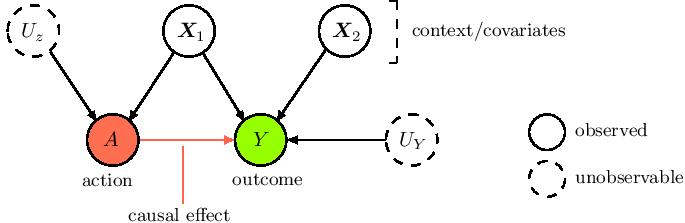
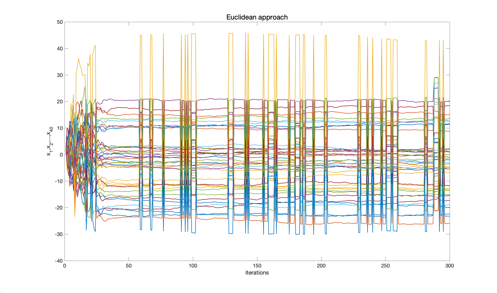
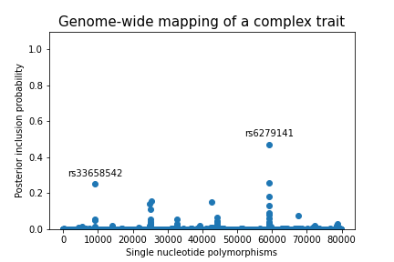

PhDs in Progress
Issue 2
Projects currently being undertaken by the department’s PhD students…
Alberto Caron
Supervisors: Ioanna Manolopoulou and Gianluca Baio
My PhD research project mainly revolves around using Bayesian non-parametric (or Bayesian machine learning) regression methods to carry out causal/counterfactual inference under high-dimensional observational data.
Counterfactual learning with observational data is of interest in many disciplines, such as healthcare and socio-economic sciences, where the exploration of alternative actions or policies in the real-world, through randomization, is costly, unethical or practically unfeasible, and where highly personalised decision-making is core (e.g. a medical treatment). Bayesian ML methods, if duly adjusted to the causal setting, provide useful and flexible tools for counterfactual prediction and uncertainty quantification around the impact of an action on an outcome of interest, given a certain (high-dimensional) context/covariate space.
Our contributions so far have extended some popular models in the field. Our first work extends the popular Bayesian causal forests learner, to induce more shrinkage/regularisation (hence the name Shrinkage Bayesian Causal Forests) to make it adapt better to sparse data generating processes and discover the main drivers behind the heterogeneity in the response e.g. to a certain treatment.

Our second work develops a multi-output deep kernel learning model to deal with causal settings where both context and action space are large, and where one is interested in the impact on multiple correlated outcomes. Current work focuses instead on importance sampling techniques and mediation analysis.
Mariya Mamajiwala
Supervisor: Serge Guillas
My research interests lie at the intersection of Monte Carlo methods, differential geometry and stochastics. The aim is to use concepts from differential geometry to develop efficient Monte Carlo algorithms.
One of the algorithms I have developed using Langevin dynamics on Riemannian manifolds is for the optimisation of non-convex problems. There are two important aspects to this method. The first is to write a given Ito stochastic differential equation on a Riemannian manifold which may be looked upon as the generalisation of the famous Laplace-Beltrami operator. The second is to define the Riemannian manifold on which to constrain the Langevin diffusion; towards this we have shown how to derive inspiration from some aspects of energetics to define a Riemannian metric which thus defines the manifold. Based on these two aspects we propose the differential geometric counterpart of a Euclidean optimisation method based on Langevin dynamics. The comparison between the Euclidean and geometric approaches is shown in the figure for a 40-dimensional Ackley function (true solution is the 40-dimensional zero vector).

.png)
A similar approach is also used to develop algorithms in Markov chain Monte Carlo, machine learning and Bayesian calibration. Moreover, this has also been applied to parameter estimation within the framework of a combined state and parameter estimation problem considered in data assimilation wherein – unlike the other problems mentioned earlier – data is available as a time history.
Xitong Liang
Supervisors: Jim Griffin and Samuel Livingstone
In the modern high-dimensional setting, a variable selection method for a particular statistical model can not only help make better predictions but can also be used to investigate underlying low-dimensional structure based on the belief that only a small subset of predictors play a crucial role in influencing the response.
A variable selection method is an automatic procedure that selects the best subset of regressors that explains most of the variation in the response among a massive number of regressors. Bayesian variable selection methods using spike-and-slab priors can be used to extract natural measures of uncertainty such as posterior model probabilities and marginal posterior variable inclusion probabilities. It has been shown that spike-and-slab priors often lead to posterior consistency in the sense that the posterior distribution puts more and more mass around the true model as more observations are gathered.
The exact posterior distribution when using a Bayesian spike-and-slab prior is challenging to compute. Markov chain Monte Carlo (MCMC) algorithms are typically used to estimate posterior summaries of interest when the number of regressors is larger than 30.
My primary PhD research objective is developing efficient MCMC algorithms targeting discrete-valued high-dimensional distributions, such as posterior distributions in Bayesian variable selection problems.
We introduce a new framework, Random Neighbourhood Samplers, and show that many recently introduced algorithms can be viewed as particular cases within the framework. We also describe a novel algorithm, the Adaptive Random Neighbourhood Informed sampler, by combining ideas from some of these existing approaches and show, using several examples of both real and simulated datasets, that a computationally efficient point-wise implementation leads to reliable inferences on a range of variable selection problems, particularly in the very large \(p\) setting.
Kaiyu Li
Supervisor: Serge Guillas
I am interested in uncertainty quantification and machine learning, with a particular focus on Gaussian processes and their application to tsunamis in Indonesia.
The simulation of a future Indonesian tsunami will be implemented by using a partial differential equation solver called VOLNA. It is a tsunami simulator that simulates the life cycle of tsunami waves. For the purpose of uncertainty quantification, many tsunami scenarios need to be generated by running tsunami simulators on high performance computing facilities. However, due to the high computational cost of tsunami simulators, it is impractical to do this. Gaussian processes are widely used as surrogate models for spatio-temporal data emulation and prediction, and their properties make them suitable for emulating these kinds of expensive tsunami models. The idea is that we approximate the key features of the expensive computer model using the cheaper Gaussian process surrogate, allowing us to test various scenarios more quickly without having to run the full model as many times as we would otherwise.

I want to design novel learning algorithms to improve the efficiency of emulation, prediction and uncertainty propagation, from the aspects of computational linear algebra methods and multi-fidelity modelling. By using computational linear algebraic methods, Gram matrices of Gaussian processes can have a specific structure, e.g. low rank or sparse. The cubic computational cost of using a Gaussian process can also be reduced. The use of multi-fidelity models will also reduce the time cost of data simulation. These algorithms can be applied for assessing the risk of future tsunamis in Indonesia.
Zhuo Sun
Supervisor: François-Xavier Briol
I am working on transfer learning in computational statistics and machine learning. In particular, I have been working on control variates, a post-processing tool to reduce the variance of Markov chain Monte Carlo (MCMC) estimators.
Integrals appear in many fields of statistics and machine learning. For instance, the expectation of some integrand against some target distribution is often of interest in statistics – posterior means of parameters, model evidence and other quantities of interest can all be written as integrals. The most common tools for these expectations are MCMC estimators. Control variates are constructed on the basis of Stein operators and the Stein class of the distribution of interest, which only includes functions with zero-mean. By subtracting the control variates from the integrand and taking the average, we get control variates estimators for those integrals, which are known to have much lower variance than that of standard MCMC estimators.
A recent work of mine is called Vector-valued Control Variates, which generalises the idea of control variates from scalar-valued to vector-valued integrals. We achieve this by proposing novel matrix-valued Stein reproducing kernels. Estimating multiple related integrals jointly can be beneficial as we would expect the information to be shared among these integration tasks. Our experiments also show that vector-valued control variates outperform scalar-valued control variates in many scenarios.
Stay on top of the latest news and research coming from the Department of Statistical Science by visiting: www.ucl.ac.uk/statistics.